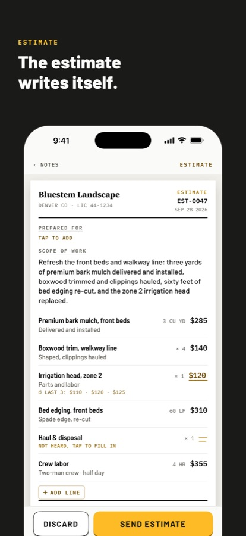
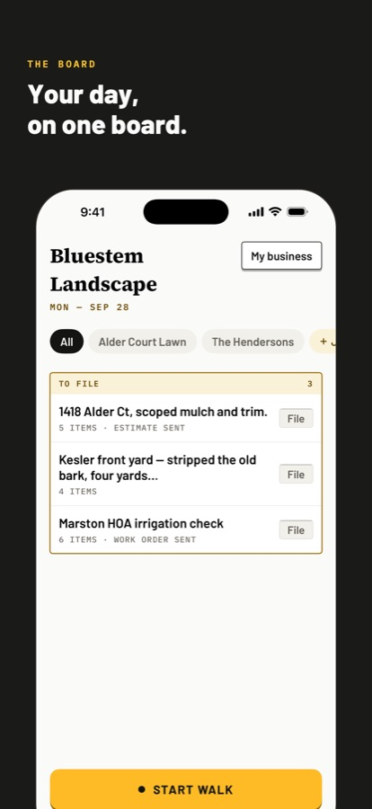
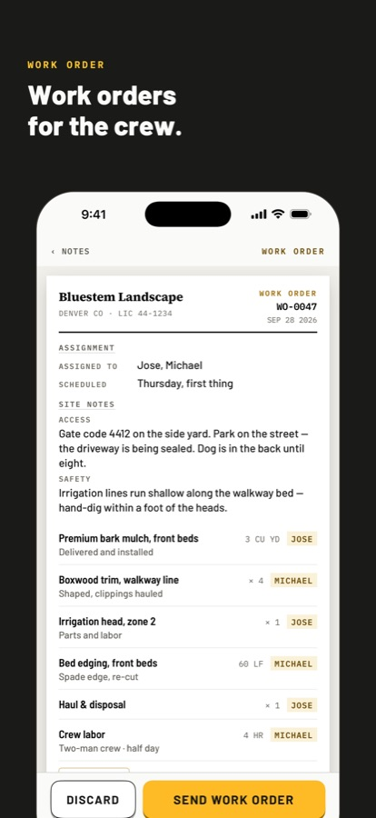

Analyst at Deloitte Consulting. Co-founder of Jefe.
I studied finance at CU Boulder, spent a summer working on a salmon boat in Bristol Bay, and now work at Deloitte in San Francisco on AI, real estate development and strategy projects.
On the side I co-founded Jefe, for contractors who'd rather not spend their evenings typing up estimates. They talk through the job and the app writes it.
Jefe is an iPhone app for landscapers, plumbers, electricians, HVAC techs and home inspectors. You walk the job and talk through it the way you'd brief your crew, and Jefe writes the estimate, invoice or work order. If it didn't hear a price, it leaves the line open and flags it instead of guessing.



We went from beta to the App Store in September 2026, shipping 100+ builds in five weeks along the way. I own product, pricing and go-to-market: subscriptions and a free tier, paid ads, the App Store listing and contractor groups, with conversion tracked weekly. Transcription runs on the phone, so job-site audio never leaves the device.
I lead development of 10 role-specific AI agents that sit on top of Oracle ERP for a global supplier's 5,000+ supply chain employees. I demoed the solution to executives at Oracle AI World 2026, which turned into 50+ follow-up conversations, and the agents are now being rolled out to other clients.
An AI assistant for a capital program's paperwork
Deloitte, 2026
I built a custom MCP server that connects AI to a program's financials and vendor contracts. It drafts SOWs, levels bids and reviews change orders, cutting the team's manual work by 30%.
Keeping a $280M+ renovation program on budget
Deloitte, 2026
I run project controls for a multi-site retail renovation program, including the model that decides which stores go in each wave. I built the baseline cost estimate for a standard renovation, leveled $3M+ in contractor bids, and caught $500K+ in pricing errors in change orders. Day to day, I'm the client's main contact for 5 general contractors and 10 vendors.
A project finance model for AMP Robotics
AMP Robotics, 2024
I built the project finance model AMP's executives used to rank projects and forecast revenue and EBITDA, alongside monthly budget reporting in Oracle PBCS.
An interactive map I built for a surf and spearfishing trip down Baja with friends. Every stop is scored for our late-August dates, with forecast windows, where to camp and notes for the drive.
A year of travel
After I graduated, my Deloitte start date got pushed back a year, so I took the chance to travel. I spent most of it in Southeast Asia, with Indonesia, Vietnam, the Philippines and Sri Lanka as the highlights. I was chasing waves, climbing volcanoes, riding motorbikes and having the time of my life.
Path
2026Deloitte Consulting, analyst. AI, real estate development and strategy projects, including a 20,000+ user ERP go-live.
2026Jefe, co-founder and product lead
2025A year of travel, mostly Southeast Asia
2024Hitachi Energy, energy market analyst intern. Power BI dashboards and SQL/Python data pipelines.
2023–24AMP Robotics, finance intern
2023DivcoWest, summer analyst. Underwrote a 31-acre mixed-use redevelopment.
2023Earthvisionz, product marketing intern
2022Commercial salmon fishing, deckhand in Bristol Bay. A boat-record 100,000+ lb season.
2024University of Colorado Boulder, B.S. in Finance and Business Analytics with Honors, Leeds School of Business
The full résumé lives on LinkedIn. Tools I use most: SQL, Python, Power BI, Excel, Oracle ERP and PBCS, MCP and Claude Code.
Outside work
Fly fishing, surfing and traveling to surf, classic rock, Toyotas and sourdough.